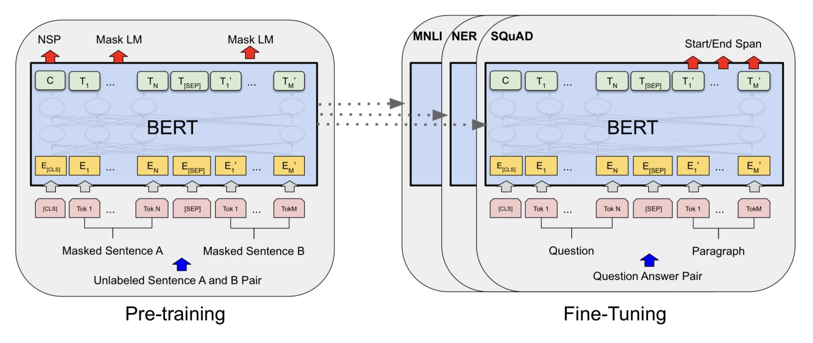
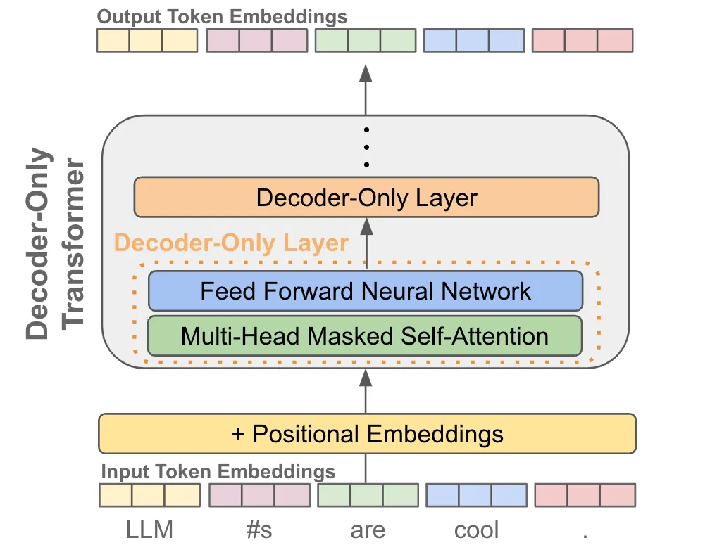
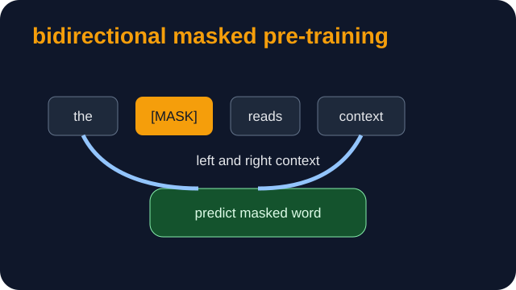

地点 OpenAI / 谷歌 AI / 美国, 加利福尼亚州
正文描述 2018年，谷歌提出的BERT第一次把大规模预训练和后训练（微调）范式引入人工智能领域，横扫了当年所有NLP任务。 BERT 是一种基于Transformer的双向编码模型。它通过掩码语言模型（掩码语言模型）和下一句预测（下一句预测）进行训练，能够同时考虑上下文信息， 在文本理解任务中表现出色。
任务/人物与头像 (2)
视频 (1)
图片 (3)
resources/images/2018-bert/people/2018-bert_people_03.jpg 人物肖像 · 相关研究者照片

resources/images/2018-bert/architecture/2018-bert_architecture_01.jpg 结构示意 · BERT 架构图

resources/images/2018-bert/architecture/2018-bert_architecture_02.png 结构示意 · BERT 架构图 资料来源 (0) 无
关键概念 (0) 无
引言摘要 BERT 旨在通过联合调节所有层中的左右上下文来预训练深度双向表示。
背景解读 (0) 无
AI100 原始数据 ai100-2018-bert地点 Google / 美国山景城
正文描述 雅各布·德夫林及合作者提出 BERT，这是一种用掩码语言建模和下一句预测预训练的双向 Transformer 语言模型。它让“先预训练、再微调”成为自然语言理解的主流配方。
任务/人物与头像 (1)
视频 (0)
图片 (2)
resources/images/figures/jacob-devlin.jpg 雅各布·德夫林肖像 · BERT 主要作者 · 本地项目素材

resources/images/bench-council-ai100/explainers/2018-bert_masked-lm.svg BERT 掩码语言建模 · 关于双向预训练的本地原创解释图。 · NAACL 资料来源 (4) 论文 《BERT》 https://arxiv.org/abs/1810.04805会议论文 ACL Anthology BERT 论文 https://aclanthology.org/N19-1423/代码 Google Research BERT 代码仓库 https://github.com/google-research/bert出版页 Google AI BERT 博客 https://research.google/blog/open-sourcing-bert-state-of-the-art-pre-training-for-natural-language-processing/关键概念 (2)
引言摘要 用于语言理解的深度双向 Transformer 预训练
背景解读 (3)
年份 2018
标题 BERT
canonical 2018-bert
地点 Google / 美国山景城
正文描述 2018年，Google 的雅各布·德夫林及合作者提出 BERT，这是一种通过掩码语言建模和下一句预测预训练的双向 Transformer 编码器。融合后的页面保留深度学习发展线中“大规模预训练加微调重塑 NLP”的判断，同时采用 AI100 内容把事件聚焦在 BERT 本身，避免与 GPT 技术线混在一起。
任务/人物与头像 (1)
视频 (0)
图片 (5)
resources/images/figures/jacob-devlin.jpg 雅各布·德夫林肖像 · BERT 主要作者 · 本地项目素材
resources/images/bench-council-ai100/explainers/2018-bert_masked-lm.svg BERT 掩码语言建模 · 关于双向预训练的本地原创解释图。 · NAACL
resources/images/2018-bert/people/2018-bert_people_03.jpg 人物肖像 · 相关研究者照片
resources/images/2018-bert/architecture/2018-bert_architecture_01.jpg 结构示意 · BERT 架构图
resources/images/2018-bert/architecture/2018-bert_architecture_02.png 结构示意 · BERT 架构图
资料来源 (4) 论文 《BERT》 https://arxiv.org/abs/1810.04805会议论文 ACL Anthology BERT 论文 https://aclanthology.org/N19-1423/代码 Google Research BERT 代码仓库 https://github.com/google-research/bert出版页 Google AI BERT 博客 https://research.google/blog/open-sourcing-bert-state-of-the-art-pre-training-for-natural-language-processing/关键概念 (2)
引言摘要 无
背景解读 (3)